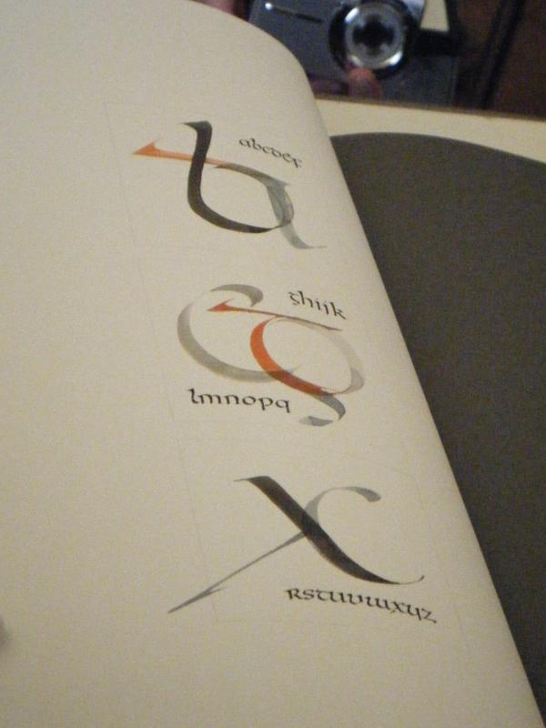
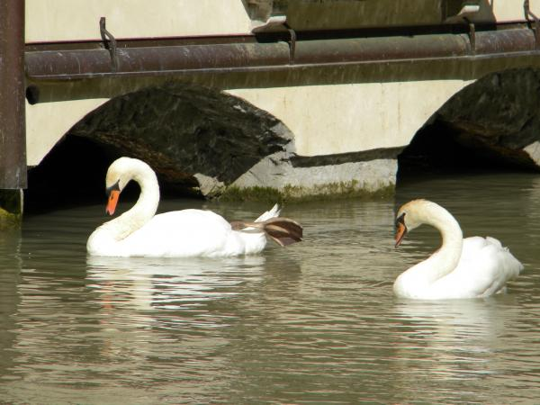

Observations
Back again in 2014
In just a few short months Travels In Typography will be walking the streets of Venice, Cornuda, Treviso, Madrid and Mainz. We'll be locking up and laying down some sweet posters and broadsides from May 17 to June 7, 2014. We'll also be documenting vernacular typography and sharing it with you via our clickable map. Can't wait to see our friends at Imprenta Municipal, Familia Plomez, Tipoteca Italiana, the Gutenberg Museum and Druckladen. Where's my apron?

Letter Collection
In Offenbach, we saw Godfrey Pott and his masterwork, Letter Collection. He was so passionate about type and calligraphy. He created the book for inspiration, which I thought was really interesting because I could never make something like that to inspire new work from myself. I feel like for me, that would be the work. Finding new inspiration outside of things I’ve already done is usually what I need. The book was filled with really inspiring theories and examples. My favorite page showed how letters in the same font relate to one another. I don’t usually think about fonts and designs in letterforms in the same way he does. I know fonts and why they look similar, but I never thought about it as how each letter forms a relationship with every other letter. I also thought it as really interesting that he always had an interest in letterforms but didn’t get into calligraphy until years after being a designer. When he told us he only had 5 months to complete this book, I was in shock. Something with that much thought and detail is almost impossible to do in that amount of time.

Reflections on Germany
After visiting Mainz I realized that the predisposed ideas I had about German type were somewhat right, but incomplete it seems. As I expected, you see lots of Helvetica and Akzidenz Grotesk....but where don't you? I noticed quite a few examples of the kind of bold, fixed-width cursive script I'd seen in old WWI movies and have grown to associate with Germany as well as Textura and other Blackletter faces. All of these are to be expected, but what I found most interesting was the juxtaposition of the dramatically different styles all over the city. All very different, but all very German. The common cultural ties between them is enough to make them sort of harmonious together...I think that's interesting.
On a slightly different note, I think one of my favorite places we visited in Germany was the Linotype Museum. Beyond the mechanical genius that I have a hard time wrapping my head around, the way these machines changed printing is insane to think about. It reminded me a prior conversation about how desktop publishing changed the industry. Mastery and craftsmanship like that surrounding movable type becoming somewhat obsolete is a shame, however, it's unavoidable and has allowed for efficiency and availability of type to the masses so there's a definite up side. I think that I utilize digital technology far too much in my own life to take such a stance, but it's still sad don't you think? I do.
Unexpected Wonders
Wandering through Treviso, Italy you stumble upon a stone bridge. The bridge, you think, is just an ordinary bridge with narrow sidewalks that allow people to pass over a river. Looking more closely, you notice the water. The water makes you stop and stare because you have never seen water that is turquoise and cloudy. Then you hear someone say, “This water is from an glacier that melted two days ago.” You look again at the water and see the current and how fast it moves and wonder where it will be in a few days. As you keep staring a light breeze hits your nose and you notice the smell. Oh the smell! It is something you have never experienced before. You take a deep breath of air and slowly release it trying to savor every nuance. It’s hard for you to place the scent, but it will stay in your memory forever.
Continuing through the streets you come across another stone bridge and river. This one is different because you notice elegant ivory birds ruffling their feathers. You move closer to the birds and suddenly realize they are wild swans. Startled by this, you just stand there staring in awe, because the only time you have seen swans is in the zoo. Standing a few moments longer, you hear a tired and annoyed voice saying, “Are we done looking a the birds yet?”

Calligraphy as Art and Design
I was in awe of Gottfried Pott’s and Guldela’s portfolios. Their work was so beautiful. I never really considered calligraphy to be part of graphic design before, but now that I understand the evolution of typography – from calligraphy, to traditionally printed type, to the digital type we use today – I can see how it fits into graphic design. I would love to work with Gottfried Pott and/or Guldela and bring them Korean letterforms to see how they would interpret them in an east-meets-west type project. As a Korean-American adoptee, my multicultural heritage influences my work as a designer and artist, and I’m always looking for ways to incorporate my multicultural heritage into my work. I think experimenting with Korean letterforms and calligraphy would be a really cool way to do this, and this experience has inspired me to pursue it.
Italy’s Wandering Blind - Waiting for a bus to Cornuda in Treviso…
A man with a stick bumps into a group member, not seeing her at all, waiting and pacing back and forth. The bus arrives, and on instinct he boards without a fumble, as our 14 stumble and bumble.
This particular man cannot see the lions we pass, the walls we pass, or the river we pass. But he knows and sees them, as he holds the ideas and questions they contain.
Although this man cannot read what is printed on his ticket, he knows the paper in which he holds, contains the power to let him board. So does it matter then what is written on this ticket? Does type choice, leading, kerning, color, or size matter at all?
Typography is meant to not only be seen, but to be known, to be felt, to be expressive, to be held, to be feared, and to be praised. It holds the power to create war, create peace, to take and make lives. Typography shares knowledge through numerous worlds in time. It makes the marks of time known.
It was like a Tilterwhirl of Type . . .
We came, we saw, we printed. In three countries for three weeks we invoked the spirits of Pi Sheng, Johannes Gensfleish and Aldo Novarese. Sometimes all in the same day! We met amazing artists, printers and historians who opened doors, pointed the way and kicked us in the pants yielding killer posters, dainty broadsides and tons of printing fun. My thanks to the amazing students who made this trip one of the best yet.